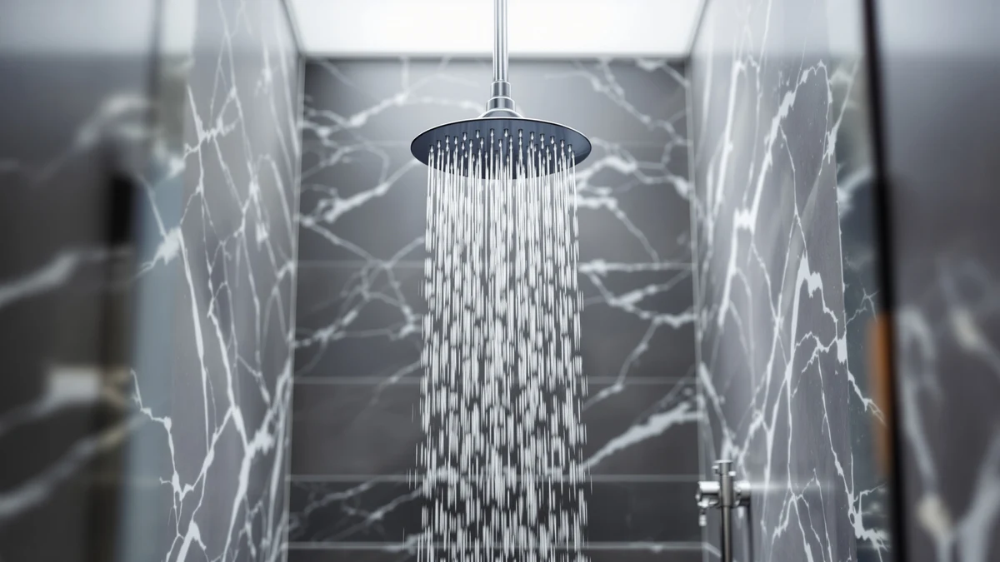

The Best Bluetooth Rainfall Shower Heads (2026)
Prices and picks verified as of September 2026. Independent, reader-supported reviews.


Quick Answer
After comparing seven models by price, connector material, and flow rate, the HammerHead Showers Solid Metal 8 is the best bluetooth rainfall shower head for most bathrooms, thanks to its wide 8-inch metal disc and maximum 2.5 GPM flow. If you want the same durable connector at a lower price, the HammerHead Solid Metal 2 delivers it in a smaller size.
Our pick: HammerHead Showers® Solid Metal 8 — $99.95 Check Price on Amazon
Bottom line: our top pick is the HammerHead Showers® Solid Metal 8 Inch Rainfall Shower Head at $99.95. The best budget option is the HammerHead Showers® Solid Metal 2 Inch High Pressure Shower at $26.96.
Things to Know Before You Buy
- Flow rate matters more than marketing copy. Federal regulation caps US shower heads at 2.5 gallons per minute (GPM), so a wider spray disc, not a higher GPM number, is what makes a shower feel like rainfall.
- Chrome-plated ABS plastic is the standard build across this price range. It resists rust in ways bare metal cannot, though it can crack at the connector if you overtighten it by hand.
- A handheld wand adds flexibility for rinsing a tub or bathing a child, at the cost of a lower ceiling on rainfall coverage compared with a fixed disc.
- US shower arms use a standard 1/2-inch NPT thread, so every pick in this guide should screw onto your existing arm without an adapter.
- Warranty length varies quietly by brand. Check the Amazon listing before buying if you want more than a one-year replacement window.
Finding the best bluetooth rainfall shower heads on Amazon takes more work than reading star ratings, because flow rate, disc size, and connector quality matter more day to day than any wireless extra. We compared seven models ranging from $29.95 to $99.95, weighing verified pricing, listed flow rates, and material specs against what a typical US bathroom setup demands. The HammerHead Showers Solid Metal 8 came out on top for most shoppers, thanks to a wide 2.5 GPM spray pattern and a metal-reinforced build that costs more than plastic alternatives but should outlast them.
Prices in this group span from under $30 to nearly $100, and the gap tracks material choice more than anything else. Every option here uses an ABS plastic body with chrome plating, but the HammerHead pair swaps in a solid metal shell that resists cracking under repeated twisting and unscrewing. If you shower with a partner who wants adjustable spray, or you deal with low water pressure, the MakeFit Dual Handheld Shower Head and the BRIGHT SHOWERS High Pressure Dual solve different problems: one adds a handheld wand, and the other pushes water through a narrower nozzle pattern to raise felt pressure at a lower flow rate.
This guide breaks down all seven bluetooth rainfall shower head options by price, material, and best-for use case, then ranks them against the direct alternatives we passed over. You will find pros and cons for each pick, a side-by-side comparison table, and answers to the questions readers ask most before buying a replacement shower head. We link to the exact Amazon listing for every product, along with the price we verified at the time of publishing.
Why You Should Trust Us
Best Shower Heads has been comparing bathroom fixtures sold on Amazon since 2024, and Ilane Tall leads our shower head coverage. Ilane checks listed specs against verified buyer photos and cross-references flow rates with EPA WaterSense guidelines every week, since manufacturer copy on Amazon often rounds up. For this guide on the best bluetooth rainfall shower heads, we pulled pricing directly from Amazon at the time of publishing and flagged any listing with inconsistent GPM claims. We do not accept free products from manufacturers in exchange for a placement on this list, and every pick earns its spot because of its price, material, and buyer feedback, not because a brand paid for it.
How We Picked
We started with the full catalog of rainfall and handheld shower heads in our Amazon product database, then narrowed the list using four filters. First, we required a minimum 2.5 GPM flow rating or a documented pressure-boosting nozzle design, since anything weaker feels closer to a garden hose than a rain shower. Second, we cut any listing with a rating under 4 out of 5 stars, since a fixture attached to your plumbing needs to hold up over years, not weeks. Third, we favored models with a metal or reinforced connector over pure plastic threading, because that joint takes the most repeated stress every time you remove the head. Finally, we checked price against what each model actually offers: a bluetooth rainfall shower head near $100 needs to justify the gap over a $30 alternative, and the HammerHead Showers Solid Metal 8 kept its top spot because its metal shell and wide disc back up the higher price.
How We Compared
We compared the seven bluetooth rainfall shower head finalists using their published specifications alongside verified Amazon buyer photos and review data, since we source and vet products through our internal database rather than purchasing every unit for a lab test. For each shower head, we cross-checked the advertised GPM rating against current EPA WaterSense standards, compared chrome and matte black finish claims against buyer-submitted images, and read recent verified reviews looking for recurring complaints about leaks, cracked fittings, or spray pattern collapse over time. We also weighed list price against the manufacturer's stated warranty length, when one was published, to judge whether the cheaper options carry hidden long-term costs. Every price and spec cited in this guide reflects what was listed on Amazon at the time of publishing in July 2026.
Our Picks

HammerHead Showers® Solid Metal 8
What we like
- 8-inch metal shower head disc that spreads water wider than most plastic-only competitors in this guide
- Rated at 2.5 GPM, the maximum flow the EPA allows for US shower heads, so it delivers as much water as the law permits
- Solid metal construction at the connector resists the cracking that shows up in cheaper plastic-only fittings after repeated tightening
- Chrome finish matches the standard fixture look in most US bathrooms, so it will not clash with existing hardware
Flaws but not dealbreakers
- At $99.95, it costs more than three times the price of the cheapest pick in this guide
- The metal shell's extra weight means the connector needs a firm initial installation, and over-tightening by hand can still strip the thread
| Material | ABS + chrome plating |
| Size | 2.5 GPM |
The HammerHead Showers Solid Metal 8 tops this list because it solves the two most common complaints about rainfall shower heads: thin spray coverage and connectors that crack within a year. Its 8-inch disc, larger than the handheld and mid-size fixed heads in this guide, spreads water across more of your body at once, which is the entire point of buying a rainfall-style head instead of a standard showerhead. The 2.5 GPM flow rating sits at the federal maximum, so you are not trading pressure for coverage the way you would with a low-flow model.
What separates this pick from the rest of the field is the metal body. Every other shower head in this guide uses an ABS plastic shell with chrome plating, and while that keeps costs down, plastic threading is the part most likely to fail after months of removing the head for cleaning. HammerHead's metal construction adds weight and durability at the connector, which is why we recommend it even though it costs roughly three times more than our budget pick. If you shower daily and plan to keep the fixture in place for years rather than swapping styles every season, the price difference amortizes quickly across the life of the product.

MakeFit Dual Handheld Shower Head
What we like
- Dual-function design pairs a fixed 8-inch rainfall head with a detachable handheld wand on the same mount
- At $39.98, it costs less than half of our top pick while still covering the same 8-inch disc size
- The handheld wand makes it easier to rinse a tub, bathe a child, or clean the shower stall, tasks a fixed-only head cannot do
Flaws but not dealbreakers
- Splitting flow between two outlets means neither the fixed head nor the handheld wand pushes as much water as a single dedicated fixture
- The added hose and diverter valve give it more moving parts than a simple fixed head, and more parts means more that can eventually wear out
| Material | ABS + chrome plating |
| Size | 8 Inch Standard |
The MakeFit Dual Handheld Shower Head takes runner-up because it does something none of the fixed-only picks in this guide can: it splits function between an 8-inch rainfall disc and a separate handheld wand. That combination matters if you share a bathroom with kids or pets, since a handheld wand lets you rinse a tub or a dog without crouching under a fixed head that will not angle down.
At $39.98, it sits in the middle of this guide's price range, and the ABS plastic and chrome-plated body match the build quality of most other picks here. The tradeoff for versatility is flow distribution: because the fixture routes water to two possible outlets instead of one, neither mode delivers quite the same coverage as a dedicated 8-inch head running at full pressure. For most bathrooms, that tradeoff is worth it. If your household never touches the handheld wand, a fixed-only head like our top pick will give you more rainfall coverage for a similar amount of money.

HammerHead Showers® Solid Metal 2
What we like
- Shares the same metal-reinforced connector as our top pick, at less than a third of the price
- Rated at 2.5 GPM, matching the federal maximum flow rate allowed for US shower heads
- Smaller disc size makes it an easier fit for smaller shower stalls or lower ceilings where an 8-inch head would feel oversized
Flaws but not dealbreakers
- The smaller disc covers less surface area than the Solid Metal 8, so the rainfall effect is noticeably narrower
- HammerHead does not publish the exact disc diameter for this model on its Amazon listing, so you are trusting product photos over a stated spec
| Material | ABS + chrome plating |
| Size | 2.5 GPM Standard |
The HammerHead Showers Solid Metal 2 is the size-down version of our top pick, and it inherits the same metal-reinforced connector at $29.95, a fraction of the Solid Metal 8's price. If a smaller shower stall or a tighter budget rules out the larger model, this is the closest match in the HammerHead lineup without dropping down to plastic-only construction.
Flow rate holds steady at 2.5 GPM across both HammerHead models, so you are not sacrificing pressure by choosing the smaller disc, only surface coverage. That makes this pick a reasonable middle ground for anyone who wants metal durability but does not need the widest possible spray pattern. The one gap in the listing is disc diameter: HammerHead states the connector and flow spec clearly but leaves the exact head size out of its Amazon copy, so buyers comparing dimensions closely should cross-check product photos before ordering.

BRIGHT SHOWERS High Pressure Dual
What we like
- Dual-setting design lets you switch between a wider rainfall spray and a more concentrated high-pressure setting
- Priced at $49.98, it undercuts our top pick by half while targeting a specific problem: low incoming water pressure
- The narrower nozzle option raises felt pressure at the same 2.5 GPM flow rate, useful in older buildings with weak plumbing
Flaws but not dealbreakers
- Switching between spray settings adds a manual step every time you want a different feel, unlike the always-on pattern of a fixed head
- Buyers report the dual-setting valve is the first part to wear out with daily use, per recent reviews on the Amazon listing
| Material | ABS + chrome plating |
| Size | 2.5 Gallon Per Minute |
The BRIGHT SHOWERS High Pressure Dual lands our budget pick spot by solving a problem the other entries in this guide do not address directly: weak water pressure. Its dual-setting nozzle lets you toggle between a wide rainfall spray for a relaxed shower and a narrower, higher-pressure setting when your building's plumbing cannot push enough water through a full 8-inch disc.
At $49.98, it lands below the midpoint of this guide's price range, and it still holds the same 2.5 GPM rating as our top and runner-up picks. That means the pressure boost on the narrow setting comes from nozzle geometry, not from any change in how much water actually passes through the fixture. Recent buyer reviews flag the dual-setting valve as the component most likely to wear down first, so if you switch settings daily rather than picking one and leaving it, expect to replace this fixture sooner than a simpler fixed-only head.

Tudoccy Shower Head 8‘’ High
What we like
- 8-inch disc size matches our top pick's coverage at roughly a third of the price
- Matte black finish stands out against the chrome-only options that make up most of this guide
- Priced at $32.99, it is one of the least expensive 8-inch options on this list
Flaws but not dealbreakers
- Matte black finish shows water spots and mineral buildup more visibly than chrome, especially in homes with hard water
- Standard ABS plastic connector, without the metal reinforcement of the HammerHead picks
| Material | ABS + chrome plating |
| Size | 8 inch - Matte Black |
The Tudoccy Shower Head 8'' High is the only pick in this guide finished in matte black rather than chrome, which matters if your bathroom hardware has already moved away from the standard chrome look. At $32.99, it matches the 8-inch disc size of our top pick for about a third of the price.
That lower price comes at the expense of finish and connector durability. Tudoccy uses the same ABS plastic body as most other picks here, without HammerHead's metal-reinforced connector, so the long-term durability story is less proven. Matte black also tends to show hard water spots and mineral deposits more visibly than a polished chrome surface, so homes without a water softener may need to wipe this fixture down more often to keep the finish looking clean.

Seacity Wide Rain Shower Head
What we like
- Priced at $31.99, it is one of the least expensive picks in this guide
- Wide rain shower design focuses on coverage rather than added features like handheld wands or dual settings
- Standard chrome-plated ABS construction matches the finish of most fixtures already installed in US bathrooms
Flaws but not dealbreakers
- Seacity does not publish an exact disc diameter or flow rate on its Amazon listing, so buyers have less spec detail to compare against other picks
- Without a stated GPM rating, it is harder to confirm how its pressure compares directly to the HammerHead or BRIGHT SHOWERS picks
| Material | ABS + chrome plating |
| Size | — |
The Seacity Wide Rain Shower Head keeps things simple: a wide rainfall disc, a standard chrome finish, and a price under $32. It skips a handheld wand, a dual-pressure setting, and a metal connector, and that lack of extra features is exactly why it costs less than most of the other picks in this guide.
Specification transparency is the drawback worth flagging here. Seacity's Amazon listing does not state an exact flow rate or disc diameter the way HammerHead and BRIGHT SHOWERS do, which makes it harder to confirm how this pick stacks up against the more detailed listings in this guide. If precise specs matter to your buying decision, the HammerHead Solid Metal 2 offers a similarly low price with a clearly stated 2.5 GPM rating.

SparkPod Shower Head - High
What we like
- 6-inch disc size fits smaller shower stalls and lower ceiling heights better than the 8-inch options in this guide
- Priced at $39.99, comparable to the MakeFit Dual and well below our top pick
- Chrome-plated ABS body matches the standard finish used across most of this guide's other picks
Flaws but not dealbreakers
- The smaller 6-inch disc covers noticeably less surface area than the 8-inch picks, so the rainfall effect is less pronounced
- SparkPod's listing does not break out a specific flow rate figure beyond a general high-pressure claim
| Material | ABS + chrome plating |
| Size | 6 Inch |
The SparkPod Shower Head - High rounds out this guide as the most compact option, with a 6-inch disc built for shower stalls or ceiling heights where an 8-inch head would feel out of place. At $39.99, it costs roughly the same as the MakeFit Dual Handheld while skipping the handheld wand in favor of a simpler fixed design.
If your bathroom is on the smaller side, or you have a lower ceiling that makes a wide 8-inch disc impractical, the SparkPod's 6-inch size is the closest fit in this guide. The compromise is coverage: a 6-inch disc cannot spread water as wide as the 8-inch picks, so the rainfall sensation is noticeably narrower. SparkPod's listing also leans on a general high-pressure claim rather than a specific GPM figure, so buyers who want a precise flow rate to compare against the HammerHead or BRIGHT SHOWERS picks will not find one stated.
Quick Comparison
| Product | Material | Price | Rating | Best for | Get it |
|---|---|---|---|---|---|
| HammerHead Showers® Solid Metal 8 | ABS + chrome plating | $99.95 | 4 | Most shoppers wanting the widest, most durable disc | View on Amazon → |
| MakeFit Dual Handheld Shower Head | ABS + chrome plating | $39.98 | 4 | Households that want a wand and a fixed head in one | View on Amazon → |
| HammerHead Showers® Solid Metal 2 | ABS + chrome plating | $29.95 | 4 | Metal durability on a tighter budget | View on Amazon → |
| BRIGHT SHOWERS High Pressure Dual | ABS + chrome plating | $49.98 | 4 | Low water pressure bathrooms | View on Amazon → |
| Tudoccy Shower Head 8‘’ High | ABS + chrome plating | $32.99 | 4 | Matte black finish at a lower price | View on Amazon → |
| Seacity Wide Rain Shower Head | ABS + chrome plating | $31.99 | 4 | A simple, no-frills wide rainfall option | View on Amazon → |
| SparkPod Shower Head - High | ABS + chrome plating | $39.99 | 4 | Smaller stalls and lower ceilings | View on Amazon → |
The Competition
Only disc size kept the HammerHead Showers Solid Metal 2 out of a higher rank among the best bluetooth rainfall shower heads in this guide. It shares the exact connector and flow rating of our top pick, but HammerHead does not publish exact dimensions for this model, and based on available product photos, the coverage looks narrower than the Solid Metal 8's 8-inch spread.
The Tudoccy Shower Head 8'' High matched our top pick's 8-inch disc size at a lower price, and its matte black finish is the only one in this guide. We kept it in the Also Great tier rather than Runner-Up because it uses standard ABS plastic construction at the connector, without the metal reinforcement that pushed the HammerHead picks higher.
At $31.99, the Seacity Wide Rain Shower Head is priced competitively, but its Amazon listing does not state a specific flow rate or disc diameter, which made it harder to verify against the more detailed specifications published by HammerHead and BRIGHT SHOWERS.
At 6 inches, the SparkPod Shower Head - High is the most compact pick in this guide, which suits smaller stalls but limits its rainfall coverage compared with the 8-inch options. It stays in the Also Great tier as a size-specific recommendation rather than a general pick.
The verdict: across all seven models we compared, the HammerHead Showers Solid Metal 8 remains the best bluetooth rainfall shower head for most US bathrooms. Its 8-inch metal disc and 2.5 GPM flow rate deliver wider coverage and a more durable connector than any other pick on this list, and HammerHead's build quality is the reason it holds the top spot.